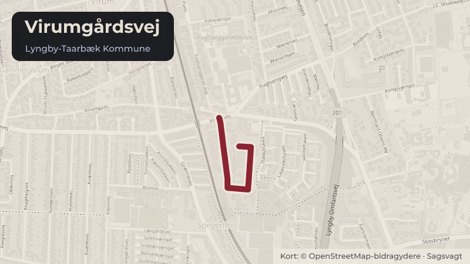

Besluttet 18. juni, Økonomiudvalget, Lyngby-Taarbæk
Placering af geotermisk anlæg
Realisering af kommunens varmeplan kræver, at der tilvejebringes mere varmekapacitet i Virumområdet. Forvaltningen har siden 2024 sammen med Vestforbrænding og Innargi arbejdet på at finde en egnet placering til et geotermisk anlæg, der kan tilvejebringe den nødvendige kapacitet.
Steder i sagen: Virumgårdsvej

Kort fortalt
- Hvem
- Økonomiudvalget, Lyngby-Taarbæk Kommune
- Hvornår
- Torsdag 18. juni 2026
- Status
- Besluttet. Ad 6) Anbefalet.
- Næste skridt
- Teknik- og Miljøudvalget skal på junimødet tage stilling til udsendelse af afgrænsningsudtalelsen til miljøkonsekvensrapporten/miljørapporten i høring.
Læs hele sagen Kommunens egen tekst
Indstilling
Forvaltningen foreslår, at
1. der etableres geotermisk varmeværk indenfor erhvervsområdet Virumgårdsvej på
adresserne Virumgårdsvej 17a, 17b og 15a,
2. boring sker på det rekreative areal syd-øst for erhvervsområdet (Grønningen),
3. der tages stilling til om mulig placering af boreområde skal udvides til også at omfatte
boring på et af de beskrevne alternative områder syd for Virumgårdsvej (skaterbane,
fodboldbane),
4. miljøvurderingsproces for de valgte lokationer igangsættes,
5. lokalplanproces for de valgte lokationer syd for erhvervsområdet igangsættes,
6. der arbejdes videre med salg hhv. leje af kommunale arealer på Virumgårsvej og det
rekreative areal syd-øst for erhvervsområdet.
Problemstilling
Kommunens Varmeplan 2022-2030 omfatter en fuldstændig fjernvarmedækning af
Virumområdet. Det bemærkes, at regeringsgrundlaget af 2. juni 2026 indeholder et mål om, at
der i 2035 ikke er boliger, der opvarmes med naturgas og olie. Hvis varmeplanen ikke
realiseres, er det langsigtede alternativ til fjernvarme således individuelle varmepumper, som
har en række ulemper i et tætbebygget område, herunder støj. For at udrulle fjernvarme til alle
Etape 1 og Etape 2 borgere i Virumområdet er det nødvendigt at skabe en lokal produktion af
varmt vand, jf. Strategisk Energiplan fra 2022. Et geotermisk anlæg på 26MW vil kunne dække
halvdelen af områdets varmebehov på en kold vinterdag.
I januar 2025 blev der truffet en principbeslutning om at fremme placering af et geotermisk
anlæg inden for erhvervsområdet Virumgårdsvej. Beslutningen blev truffet efter screening af 7
lokaliteter i Virumområdet. Screeningsmaterialet fra 2024 er vedhæftet., (bilag). Efterfølgende
er der kommet ny viden som har tydeliggjort, at kun 4 af arealerne der indgik i screeningen i
2024, ligger rigtigt i forhold til forekomsten af det varme vand i undergrunden. Der er tale om de
arealer der har numrene 1,2,3 og 5 i det vedhæftede materiale. Erhvervsområdet
Virumgårdsvej er stadigvæk egnet.
På tidspunktet for principbeslutningen i 2025, var det forventningen, at det geotermiske anlæg
kunne etableres på "TDC-grunden” – Virumvej 43/Virumgårdsvej 1. I det forløbne år har det
været afsøgt, om der kunne opnås en frivillig aftale om køb af ejendommen. Dette viste sig ikke
at være muligt, og Forvaltningen vurderer ikke, at grunden kan eksproprieres, så længe
Lyngby-Taarbæk selv har tilgængelige arealer, jf. nedenfor. I februar 2026 bemyndigede
Udvalgene for Teknik og Miljø og Byplan, at der i stedet blev arbejdet videre med to løsninger,
hvor der enten blev lavet en opdelt løsning med fysiske anlæg i erhvervsområdet
Virumgårdsvej, og boring i det rekreative areal syd-øst for erhvervsområdet, eller placering af
både fysiske anlæg og boringer i det rekreative areal. Af sagen i februar fremgik det, at
Vestforbrænding planlægger at etablere en elkedel ved siden af det geotermiske anlæg, og at
det er nødvendigt at de to anlæg placeres samlet pga. delt transformer.
Forvaltningen er nu sammen med Vestforbrænding og Innargi enige om, at anbefale en opdelt
løsning med fysiske anlæg i erhvervsområdet, og boring på det rekreative areal syd-øst for
erhvervsområdet. En illustration af projektområdet er vedhæftet som bilag, (bilag). Denne
løsning giver mulighed for at bibeholde det rekreative areal syd-øst for erhvervsområdet med
mulighed for delvis genplantning af træer efter endt boring, samt en naturlig placering af
bygninger med industriel karakter i et eksisterende erhvervsområde. Derudover betyder
placeringen af bygninger i erhvervsområdet, at Vestforbrænding kan komme hurtigt i gang med
at etablere elkedlen.
Borgermøde
Den 27. maj afholdt Forvaltningen i samarbejde med Innargi og Vestforbænding et borgermøde
om den påtænkte placering af det geotermiske anlæg.
Mødet var for de nærmeste naboer, men blev streamet. og kunne ses på fjernvarme.ltk.dk af
andre interesserede borgere. Cirka 250 borgere deltog i det fysiske møde, og cirka 100
borgere så med via streaming. Mødet blev optaget og kan ses på fjernvarme.ltk.dk. De
fremmødte borgere var positive overfor etableringen af et geotermisk anlæg generelt, men var
skeptiske overfor den foreslåede placering. Borgerne gav udtryk for, at de er kede over
udsigten til, at træerne på det rekreative areal skal fældes, og at der vil gå mange år, før noget
tilsvarende kan genskabes. Derudover var der flere der fremhævede, at der er mange sårbare
borgere i området - også borgere som ikke bor i handicap- og ældreboligerne eller
plejehjemmet. Der blev stillet spørgsmål ved forvaltningens vurdering af, at Grønningen ikke er
fredsskov, jf. nedenfor.
På mødet, blev indholdet af den afgrænsningsudtalelse til
miljøkonsekvensrapporten/miljørapporten for det geotermiske anlæg, der snart sendes i høring
kort berørt, og det blev også fortalt, at Vestforbrænding planlægger at etablere en elkedel og
potentielt en varmeakkumuleringstank ved siden af det geotermiske anlæg.
På baggrund af borgermødet er alternative boreområder undersøgt.
Alternative boreområder
Innargi beskriver i et vedlagt notat, (bilag), fem alternative boreområder. To af forslagene er
indenfor erhvervsområdet Virumgårdsvej, hhv. ved ungdomsklubben på Virumgårdsvej 2 og
parkeringspladsen ved daginstitutionerne Børnehuset Pilen og Idrætsbørnehuset Græshoppen.
Disse kan dog ikke benyttes, fordi de er for små eller har den forkerte fysiske udformning. De
tre alternativer der er store nok, er beskrevet nærmere af Innargi og er også screenet af
Forvaltningen (bilag).
Fælles for de tre undersøgte løsninger er, at de medfører en længere rørlægning fra
geotermibrøndene til varmeværket på Virumgårdsvej 17a, 17b og 15a. En længere rørlægning
vil betyde øget gravearbejde i området enten øst eller vest om institutionerne i det nordvestlige
hjørne af matrikel 9y – Virum by, Sorgenfri (Virumgårds jorde). En længere rørlægning betyder
også et større varmetab i forbindelse med transporten af det varme vand fra brøndene til
varmeværket, med deraf følgende reduceret produktionskapacitet for det geotermiske
varmeværk. Den første del af adgangsvejen for alle tre alternativer er gennem
erhvervsområdet via Virumgårdsvej og ned gennem parkeringspladsen der hører til
Børnehuset Pilen og Idrætsbørnehuset Græshoppen, indtil man rammer cykelstien nedenfor.
Alternativ 1 og 2 - boring på skaterbane
Ved alternativ 1 borer man udelukkende på skaterbane-området. Denne løsning medfører at
brøndkældrene kan placeres på det areal der allerede er befæstet, men ville betyde fældning
af et antal træer. Træbevoksningen på skaterbane-området kan muligvis betragets som en del
af den samme bevoksning som bevoksningen på det rekreative areal syd-øst for
erhvervsområdet, og det ville derfor skulle afklares, om Styrelsen for grøn Arealomlægning og
Vandmiljø deler kommunens opfattelse af, at det ikke er fredskov.
Ved alternativ 2 borer man i kanten af skaterbane-området, hvilket ville nødvendiggøre
inddragelse af en del af den nordlige fodboldbane i boreperioden. Dette ville betyde at færre
træer ville skulle fældes, end ved alternativ 1.
Fælles for alternativ 1 og 2 er, at man ville være nødt til at forstærke den ovenfor løbende
cykelsti og lukke den i anlægsperioden, eller alternativt inddrage en del af den nordlige
fodboldbane som adgangsvej, med tilsvarende reduceret adgang til fodboldbanen. Fælles for
alternativ 1 og 2 er også, at nærheden til Virumgård Plejehjem betyder, at man sandsynligvis
ville påføre beboerne en højere støjbelastning i anlægsfasen, end hvad der er tilfældet ved
boring på det rekreative areal. Dette ville måske kunne afhjælpes ved at lave en lokal
støjdæmpning med containere rundt om den nordlige del af plejehjemmet, men der er ikke på
nuværende tidspunkt lavet støjberegninger for dette scenarie som kan bekræfte, hvor stor
effekten ville være.
Alternativ 3 - boring i den vestlige kant af den nordlige fodboldbane
Det tredje alternativ er boring i den vestlige kant af den nordlige fodboldbane, med placering af
brøndkældrene under målfeltet. Igen ville en del af fodboldbanen skulle inddrages i
boreperioden, og dertil af og til i driftsperioden i forbindelse med vedligehold 1-2 uger hvert 3.
år samt 3-4 dage hvert halve år. En placering her ville formentlig betyde, at den nordlige
boldbane, som er en kunstgræsbane, ville skulle reetableres helt eller delvist.
Boring på placeringen ville også betyde, at mange borgere i højhusene på den anden side af
jernbanen sandsynligvis ville blive påvirket af støj. Det er uvist om man ville kunne dæmpe den
støj, der bevæger sig opad. Heller ikke dette scenarie er der lavet en støjberegning for.
Ekspropriation af grund i erhvervsområdet som alternativ til boring
Fra opstarten af processen i 2024 var det forventningen, at Vestforbrænding og/eller Innargi
kunne erhverve en grund indenfor erhvervsområdet Virumgårdsvej, der var tilstrækkelig stor til,
at boringen kunne finde sted på grunden. Dette er imidlertid ikke lykkedes, og grundene på
Virumgårdsvej 15a, 17a og 17b er ikke store nok til at boringen kan placeres på de
pågældende grunde. Forvaltningen har overvejet om ekspropriation af en egnet grund i
området kunne være et alternativ. Forvaltningen vurderer, at formålet om etablering af et
geotermisk anlæg i sig selv godt kan begrunde en ekspropriation, men at det kræver, at en
ekspropriation er nødvendig for at realisere anlægget. Da der kan peges på egnede
kommunalt ejede arealer, vurderer forvaltningen ikke, at kravet om nødvendighed er opfyldt (se
bilag).
Løsninger
Tekniske anlæg i erhvervsområdet
De grunde der skal bruges i erhvervsområdet Virumgårdsvej til etablering af det geotermiske
anlæg og elkedlen, er Virumgårdsvej 17a og 17b samt Virumgårdsvej 15a. Vestforbrænding
har købt Virumgårdsvej 17a og 17b af en privat grundejer, og der pågår en dialog mellem
Vestforbrænding og Lyngby-Taarbæk Kommune om køb af Virumgårdsvej 15a, som
kommunens anvender til driftsplads, til drift af idrætsanlæg mm., herunder frostfrit
garageanlæg, oplag og vaskeplads. Driftsafdelingen vil kunne fraflytte adressen i løbet af ca.
et år, men der vil skulle findes en ny placering til materiel mv. til vedligeholdelse af bl.a.
fodboldbaner i området, og faciliteterne skal stå klar inden flytning for at undgå driftsstop. Det
må afklares i processen, om dette evt. kan ske på Vestforbrændings ejendomme på
Virumgårdsvej, eller om anden placering skal findes. Det er Forvaltningens udgangspunkt, at
en omplacering skal ske uden udgifter for kommunen, og således betales af Vestforbrænding.
De tre grunde kan ud over det geotermiske varmeværk og elkedlen også komme til at
indeholde en varmeakkumuleringstank, som Vestforbrænding står for at etablere. Udvalget for
Teknik og Byplanudvalget blev på deres møder den 3. og 4. juni i 2025 første gang orienteret
om, at Vestforbrænding arbejdede med at etablere en elkedel og varmeakkumuleringstank i
erhvervsområdet Virumgårdsvej. Vestforbrænding har udarbejdet et notat, (bilag), hvor der
redegøres for, hvad en varmeakkumuleringstank er, og hvilke placeringsmuligheder der er i
Virum. Det fremgår, at de eneste to placeringsmuligheder i Virum p.t. vurderes at være
Virumgårdsvej 15a og det rekreative areal sydøst for erhvervsområdet. Hvis tanken etableres
på Virumgårdsvej er det aftalt med Vestfrobrænding, at den højst vil blive 9 meter høj, og
dermed vil kunne overholde højdekravene i den gældende lokalplan. Der vil skulle tages
politisk stilling på et senere tidspunkt.
Det geotermiske anlæg og elkedlen vil komme til at benytte den samme transformer, men de
to anlæg vil i miljøvurderingssammenhæng blive betragtet som to forskellige projekter. Derfor
er elkedlen og en potentiel varmeakkumuleringstank ikke beskrevet i den projektbeskrivelse,
som er indsendt af Innargi, (bilag).
Boring på det rekreative areal syd-øst for erhvervsområdet og spørgsmålet om fredskov
Det rekreative område kan beskrives som et område tilgroet med krat, træer og buske, med
enkelte trampede stier igennem. Træerne er cirka 40 år gamle. Forvaltningen vurderede i 2022
arealet i forbindelse screening af potentielle placeringer af daginstitutionsbyggeri, (sag blev
forelagt Kommunalbestyrelsen i januar 2023) og konkluderede følgende: "Der er på arealet
ikke foretaget udtynding inden for de seneste mange år, og de mange forskellige frugtbuske er
derfor vokset sammen til et krat. Oven over krattet står der spredte overstandere af egetræer af
samme ikke hjemmehørende arter. Vi vurderer, at dette areal heller ikke kan betegnes som
fredskov, fordi der er for få skovtræer til at det kan danne en sammenhængende skov.”
Forvaltningen har besigtiget området igen ifm. geotermiprojektet, og har ikke fundet anledning
til at ændre vurderingen. På borgermødet blev der, jf. ovenfor, rejst spørgsmål ved rigtigheden
af denne vurdering. Det er Styrelsen for Grøn Arealomlægning og Vandmiljø, som er
myndighed, og spørgsmålet om fredskov vil blive forelagt styrelsen. Det bemærkes, at
bevoksningen uanset dens at den ikke er fredskov rummer en selvstændig naturværdi som
levested for almindelige arter og som del af det grønne netværk i området. Artsdatabaserne
viser, at der er en del fuglearter knyttet til området, men der er ikke tale om særligt sjældne
arter. Som en del af den miljøkonsekvensrapport/miljørapport der skal laves, vil der blive lavet
en feltundersøgelse der redegør for tilstedeværelse af fugle og flagermus etc.
Størstedelen af træerne på det rekreative område vil skulle fældes, bortset en randbeplantning
der bibeholdes. Randbeplantningen vil have en afskærmende effekt omkring borepladsen,
medens boringen pågår. Efter boreperioden er overstået, vil det eneste synlige spor af
boringerne være de metaldæksler som ligger ovenpå brøndkældrene, og som vil ligge i terræn.
Metaldækslerne vil fylde cirka 60m2. Hvis det ønskes, kan alt undtagen adgangsvejen til
brøndkældrene og cirka 273 m2 rundt om dem, genplantes med træer efter endt boring. Se
figur 3-1 på side 14 i den vedhæftede projektbeskrivelse, (bilag).
Planforhold
Forvaltningen har tidligere orienteret om, at det ikke vurderes, at de tekniske bygninger og
anlæg på Virumgårdsvej vil udløse krav om ny lokalplan, da placeringen ligger i et eksisterende
erhvervsområde. Forvaltningen anbefaler, at der udarbejdes en ny lokalplan for det rekreative
område syd-øst for erhvervsområdet, som muliggør boring i det pågældende område.
Forvaltningen har overvejet, om det er nødvendigt med lokalplan, da der ikke vil være tekniske
anlæg over jorden, når anlægget er færdigt. Det vurderes dog, at geotermiprojektet forudsætter
en aktivitet på arealet, som kan ses som en udfordring af områdets status som rekreativt areal.
Der skal etableres en adgangsvej (evt. ved en form for græsarmering) som forbinder brøndene
til Virumgårdsvej, og der skal etableres et areal rundt om metaldækslerne. Miljøvurderingen af
en lokalplan vil kunne foretages sådan, at der udarbejdes en samlet
miljørapport/miljøkonsekvensrapport for både plan og projekt. Innargi har på forhånd meddelt
kommunen at de ønsker at gå direkte til miljøvurdering, og der skal derfor ikke udarbejdes en
screening. "Scopingen" udgøres af afgrænsningsrapporten. Miljøbegrebet er det samme for
plan og projekt, og der vil derfor ikke være forskel på hvilke undersøgelser der skal udarbejdes,
uanset om der udarbejdes lokalplan eller ej.
Forvaltningen anbefaler derfor at udarbejde en lokalplan og lade udarbejde en samlet
miljørapport/miljøkonsekvensrapport for både plan og projekt. Dette vurderes at være muligt
uden at det vil forsinke projektet. Lokale ønsker fremkommet i høringsfasen til den rekreative
funktion af arealet kan indgå i den endelige lokalplan, og derved give naboer og brugere af
området en større sikkerhed for den fremtidige brug og visuelle karakter af området.
Der indgås en dialog med Innargi/Vestforbrænding om henholdsvis salg/leje af det nødvendige
areal, herunder om krav til reetablering, jf. bl.a. kommunens træpolitik. Uanset hvordan arealet
reetableres, vil der være fuld offentlig adgang til hele arealet, undtagen 1-2 uger hvert 3. år
samt 3-4 dage hvert halve år. Retablering og krav hertil indgår i den kommende proces.
Boreperioden
Boreperioden vil foregå henover en periode på 4-5 måneder, med to boreperioder på 60 dage
hver. Hvis der mod forventning bliver behov for at bore en tredje brønd, kommer der en tredje
boreperiode, og boreperioden vil samlet set strække sig henover 6-7 måneder. Innargi, som
skal etablere og drive det geotermiske anlæg, har lavet en foreløbig støjberegning af
støjpåvirkningen på husfacaderne, (bilag) i boreperioden, hvor der vil skulle bores i døgndrift.
Støjberegningen viser en væsentligt mindre støjpåvirkning for de nærmeste naboer, end der
var lagt op til, da der blev arbejdet med en placering på Virumgårdsvej 43/Virumgårdsvej 1.
Støjberegningen er det mest konservative estimat/worst case scenarie, for støjpåvirkningen.
Støjberegningen er baseret på en eksisterende rig, men Innargi forventer at der skal bores i
Virum med en eldrevet rig, som først er ved at blive bygget, og som der ikke kan laves
beregninger på endnu. Derudover vil der også kunne opsættes højere støjafskærmning, end
hvad der hidtil er lagt til grund i beregningerne.
Der er opmærksomhed på, at boreområdet ligger lige ved siden af Idrætsbørnehuset
Græshoppen, samt Børnehuset Pilen, med dets to afdelinger Grøftekanten og Valmuen.
Forvaltningen har tidligere været på besøg i begge børnehuse, hvor det blev fortalt, at der er
vuggestuebørn som sover til middag udenfor, og at mange forældre afleverer børn nordfra, via
Virumgårdsvej. Baseret på de nuværende, foreløbige beregninger, vil børnehusene blive
påvirket af støj der har en styrke på mellem 45dB(A) og 55dB(A) i boreperioden.
Der er også opmærksomhed på, at Virumgård Plejehjem ligger cirka 200 meter syd for det
planlagte boreområde, og at der ligger handicap- og ældreboliger i første række ud til
boreområdet på Solsikkemarken 45-61. Baseret på de foreløbige beregninger vil plejehjemmet
blive påvirket af støj på mellem 35 dB(A) og 45 dB(A), og handicap- og ældreboligerne vil blive
påvirket af støj mellem 45dB(A) og 50dB(A).
Udover daginstitutionerne og plejehjemmet ligger der på Virumgårdsvej en
dagbehandlingsskole for børn og unge med vanskeligheder inden for autismespektret og
lignende. Skolen vil mærke støj på mellem 45dB(A) og 50db(A).
Hvis man skal forklare støjniveauet, kan man sige at 45dB(A) svarer til lyden fra en
opvaskemaskine og at 60 dB(A) svarer til lyden fra en almindelig samtale. Støjgrænsen om
natten for et anlæg i drift i boligområder for åben og lav boligbebyggelse er på 35 dB(A).
Beregningerne, der som sagt viser "worst case" scenariet, vil blive kvalificeret med løbende
støjmålinger, så snart borearbejdet går i gang. I forbindelse med miljøtilladelsen skal der
fastsættes en støjgrænse, som afgør, hvilke borgere, der tilbydes genhusning. I Aarhus blev
borgere, hvor der kan måles støj på over 50dB(A) ved husfacaden, tilbudt genhusning, men
der blev også tilbudt forskellige mindre tiltag til borgere i boliger, hvor der måles mellem
40dB(A) og 50dB(A). I anlægsperioden er det i øvrigt planen, at Innargi er første instans i
forhold til at behandle klager. Kun, hvis der ikke kan opnås enighed, bliver Lyngby-Taarbæk
Kommune involveret. Innargi har udarbejdet en kommunikationsplan, (bilag).
Forvaltningen er allerede i dialog med børnehusene, plejehjemmet og behandlingsskolen, og
vil sammen med Innargi deltage på bestyrelsesmøder for at svare på spørgsmål og undersøge,
hvorvidt der kan tages individuelle hensyn. Derudover vil Innargi også, så vidt det er muligt,
tage individuelle møder med beboerne i handicap- og ældreboligerne.
Alternative placeringer
Hvis Kommunalbestyrelsen beslutter, at der skal arbejdes med alternative placeringer på
boldbanen, vil Forvaltningen i samarbejde med Vestforbrænding og Innargi belyse disse
nærmere Det bemærkes j f. ovenfor, at også disse placeringer vil medføre gener i form af støj,
men at den konkrete støjpåvirkning selvsagt påvirkes af den valgte placering. Spørgsmålet om
fredskov kan påvirke to af de alternative placeringer, da de medfører et indgreb i det
bevoksede område ved skaterbanen. I det omfang, at placeringen påvirker kunstgræsbanen,
vil der skulle laves en aftale om reetablering af banerne.
Strategisk ramme
Lyngby-Taarbæk Kommunes Varmeplan 2022-2030, Vestforbrændings Varmeplan 2030 og
Lyngby-Taarbæk Kommunes DK2020 Klimaplan, som forudsætter en 90% reduktion af CO2 i
I Lyngby-Taarbæk Kommunes Strategiske Energiplan, hvori Varmeplan 2022-2030 indgår som
et delelement, nævnes geotermi som en mulighed på længere sigt.
Videre proces
Teknik- og Miljøudvalget skal på junimødet tage stilling til udsendelse af
afgrænsningsudtalelsen til miljøkonsekvensrapporten/miljørapporten i høring. Jf. den plan for
myndighedsprocessen der er lagt, (bilag), vil selve miljøkonsekvensrapporten/miljørapporten
blive udsendt i høring i starten december. Samtidigt sendes forslag til et lokalplanstillæg for det
rekreative areal i høring, og der afholdes endnu et borgermøde.
En endelig politisk beslutning om godkendelse af miljøkonsekvensrapporten/miljørapporten og
paragraf 25 tilladelsen, og dermed også den endelige politiske beslutning om etablering af
anlægget samlet set, forventes taget i marts 2027. Boreperioden forventes p.t. at løbe fra
september til og med december 2027, og anlægget forventes at kunne stå færdigt i efteråret
Der skal senere i processen tages politiske beslutninger om om salg af Virumgårdsvej 15 og
salg eller leje af det rekreative areal. Innargi vil arrangere flere borgermøder for de nærmeste
naboer i forbindelse med anlæg af borepladsen og i forbindelse med opstart af boring.
Forvaltningen retter henvendelse til Styrelsen for Grøn Arealomlægning og Vandmiljø for at få
bekræftet, at det rekreative areal syd-øst for erhvervsområdet ikke er omfattet af fredskovspligt.
Planen for myndighedsprocessen der er lagt, forudsætter, at der kommer en forholdsvis hurtig
tilbagemelding fra styrelsen.
Hvis det besluttes at gå videre med en belysning af de alternative placeringer på
kunstgræsbanen, vil forvaltningen orientere boldklubberne, og KFU vil blive forelagt en endelig
beslutning om placering af anlægget, hvis dette omfatter kunstgræsbanen.
Økonomi
Lyngby-Taarbæk Kommune er i dialog med Vestforbrænding om salg af Virumgårdsvej 15, og
kan forvente et provenu fra salget.
Derudover vil der muligvis komme en indtægt fra leje af det rekreative areal syd-øst for
erhvervsområdet. Dette skal afklares i det videre forløb.
Beslutningskompetence
Teknik-og Miljøudvalget anbefaler indstillingspunkt 1 - 4.
Byplanudvalget anbefaler indstillingspunkt 5.
Økonomiudvalget anbefaler indstillingspunkt 6.
Kommunalbestyrelsen beslutter indstillingspunkt 1-6.
Beslutningsforløb
Beslutning fra Teknik- og Miljøudvalget 2026-2029, den 9. juni 2026, punkt 7:
Ad 1) Anbefalet.
Ad 2) Udvalget ønsker at forvaltningen belyser alternativ 1, 2 og 3 jf. bilag 8, udover
Grønningen, idet udvalget så vidt muligt ønsker at undgå at anvende Grønningen.
Ad 3) Anbefalet.
Ad 4) Anbefalet.
Endvidere ønsker udvalget, at der etableres en følgegruppe med diverse interessenter i
området, med henblik på løbende opdatering på projektet.
Magnus von Dreiager (C) og Henrik Bang (Ø) var fraværende.
Beslutning fra Byplanudvalget 2026-2029, den 10. juni 2026, punkt 4:
Ad 5) Anbefalet.
Troels Bennike (I) var fraværende.
Beslutning
Ad 6) Anbefalet.
Kilde: Lyngby-Taarbæk Kommune, Økonomiudvalget, referat fra mødet torsdag 18. juni 2026, punkt 26. Læs den originale sag hos kommunen.